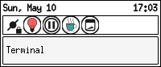
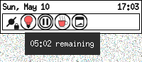

gTeaTime (Tea & Coffee Timer) is a GTK 3 systray timer for tea and
coffee presets written in C. It avoids GtkStatusIcon and
libappindicator. The tray integration first tries
StatusNotifierItem over D-Bus using GIO, then falls back to the
XEmbed system tray protocol on X11.
It was inspired by KDE’s classic kteatime, which I used in the early
2000s before moving from that desktop environment to Openbox and
a GTK3-only setup.


libgtk-3-devlibx11-devpkgconf (for Makefile)On Debian-like systems:
sudo apt install pkgconf libgtk-3-dev libx11-dev
make
./bin/gteatime
Installation of the binary and the three needed icons can be done with:
make install
By default it will be installed in usr/local/bin, but that can be
changed using, of course, the PREFIX standard. To install it in
/usr/bin, use:
make PREFIX=/usr/ install
Icons can be copied into any theme. Under scalable/apps is a good
place. For example: ~/.local/share/icons/my_icon_theme/scalable/apps/.
There are only three icons:
gteatime.svg -- program icongteatime-on.svg -- systray running icongteatime.off.svg -- systray idle iconAlthough, the "on" and "off" icons are for the systray, and maybe it
will be better to put them in the directory scalable/status.
make uninstall
But if the program was installed by modifying the PREFIX directory, it
has to be specified as well, and in the same way, when invoking
uninstall.
This program requires either a desktop component that implements the
StatusNotifierItem watcher protocol, or an X11 tray manager that owns
_NET_SYSTEM_TRAY_Sn (where n is the X11 screen number). KDE
Plasma usually supports StatusNotifierItem directly. XFCE and other
X11 panels usually support the fallback tray. GNOME on Wayland normally
requires a tray or StatusNotifierItem extension.
No AppIndicator API was used.
The code is written as C99-compliant.
Most editable program constants, including icon names, user-visible
identity strings, and tray protocol names, are in include/defs.h.